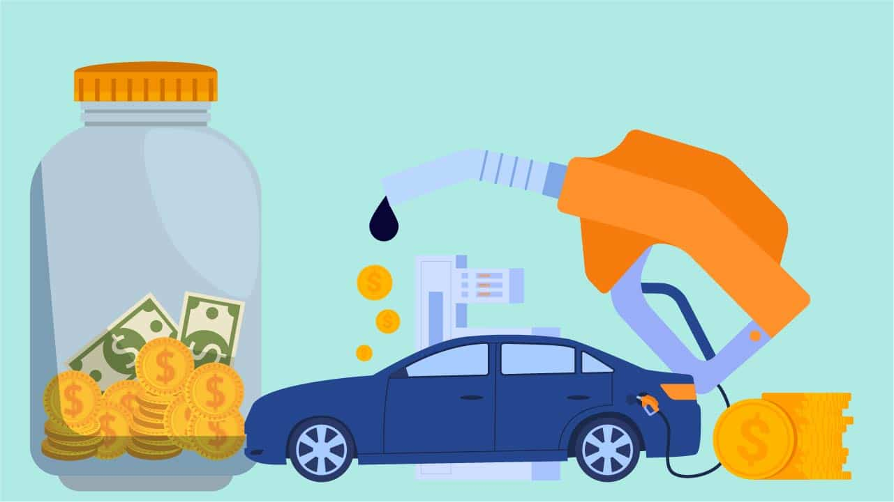
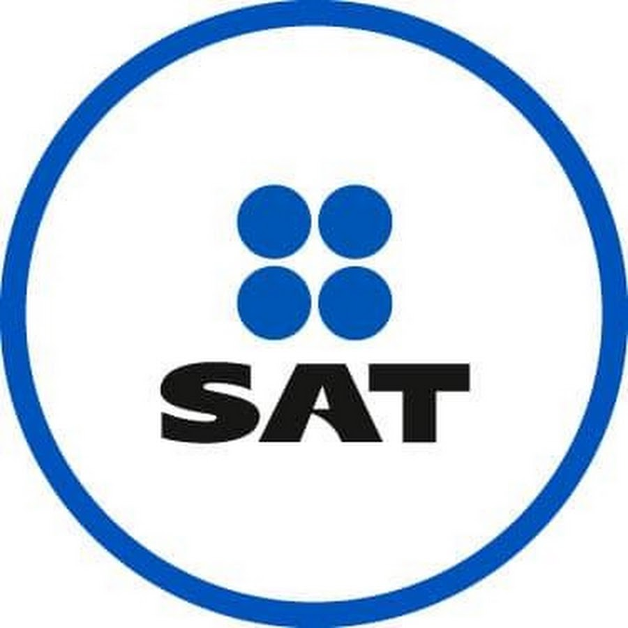

ISR
El Impuesto sobre la Renta (ISR) es un impuesto que se aplica a los ingresos adquiridos,
con excepción de las herencias y las donaciones. Se trata de un impuesto directo, pues
grava directamente las fuentes de riqueza. Se aplica tanto a personas físicas como a personas
morales y también a residentes en el extranjero que perciban ingresos desde México. La tasa del
ISR no es fija, puede variar entre el 1.9% al 30%.
IVA
El Impuesto sobre el Valor Agregado (IVA) es un tipo de gravamen de los llamados indirectos,
en virtud de que los contribuyentes del mismo no lo pagan directamente, sino que lo trasladan
o cobran a través de una tercera persona, hasta llegar al consumidor final. En la actualidad el
IVA maneja 3 tasas diferentes: 16% general, 11% fronteriza, 0% para algunos actos o actividades
centradas en el sector primario, medicinas, alimentos y exportación de bienes y servicios.

IEPS
El Impuesto Especial sobre Producción y Servicios (IEPS) es un impuesto que se aplica por la producción,
venta o importación de gasolinas, bebidas alcohólicas, cerveza y tabaco. Este impuesto debe ser cubierto
por los fabricantes, productores o importadores de gasolina o diésel. Los únicos artículos que no se les
impone el impuesto especial, son las cadenas derivadas del trigo, maíz y otros cereales.
IDE
El Impuesto a los Depósitos en Efectivo (IDE), se aplica a los depósitos en efectivo realizados en cualquier
banco, ya sea por uno o por varios depósitos cuyo monto exceda los $15,000 al mes. No se paga este impuesto
por los depósitos a través de cheques o transferencias electrónicas.

SAT
El SAT o Servicio de Administración Tributaria es una dependencia de la Administración Pública Federal que se
encarga de la recaudación, impuestos y la vigilancia del cumplimiento de las obligaciones fiscales.